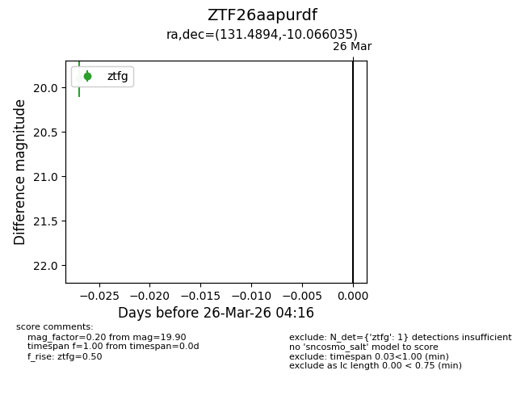
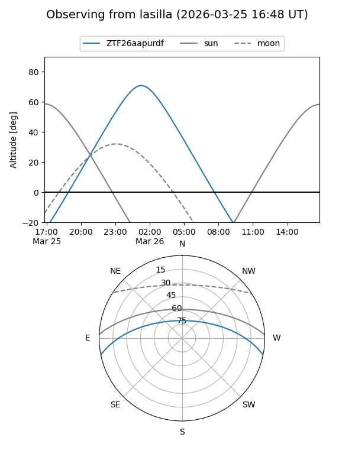
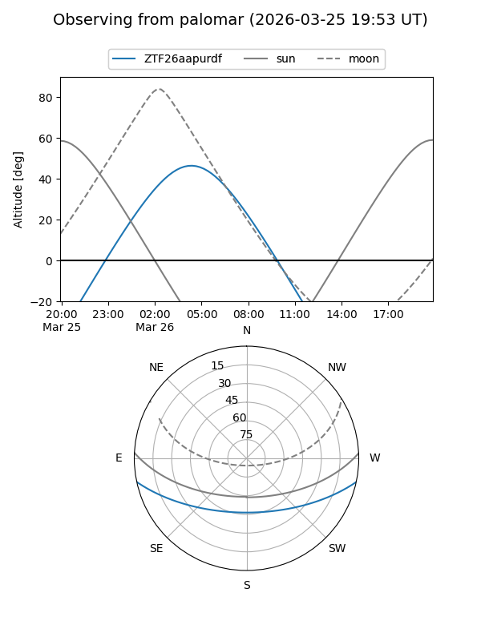

ZTF26aapurdf
Target ZTF26aapurdf at 2026-03-26 04:19
Aliases and brokers:
FINK: link
Lasair: link
ALeRCE: link
alt names
ZTF26aapurdf (ztf,fink_ztf)
Coordinates:
equatorial (ra, dec) = 131.4894,-10.06604
equatorial (HMS+DMS) = 08:45:57.46,-10:03:57.73
galactic (l, b) = (236.1471,+19.88759)
Flags:
Photometry:
last ztfg=19.90
1 ztfg detections
Lightcurve

Visibility


Additional plots